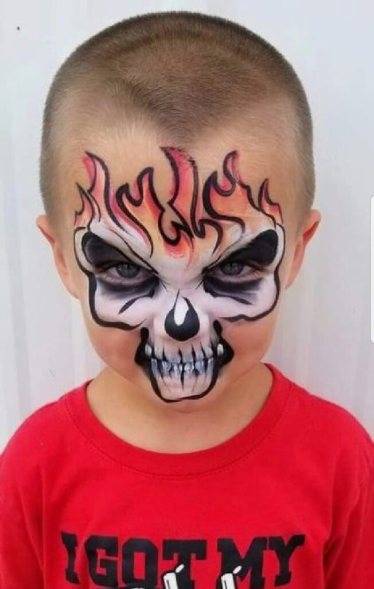

ברוכים הבאים לאתר האיפור ותסרוקות של שנהב לוי.
מי שטרם הספיק להכיר אותי, אז הינה קצת פרטים על מי שאני
בוגרת קורס איפור ותסרוקות באקדמיה לאיפור של "ירין שחף" - מאפר העל
האיפור שלי נפרס על פני מגוון רחב של האוכלוסיה
החל בנשים בעלות תווי פנים צעירות ומבוגרות, וכלה בנשים בעלות גוון עור כהה ובהיר
האיפור מיועד הן לילדים, כגון בפורים וימי-הולדת, איפור ערב וכמובן כלות
גלריית תמונות

קצת מוסיקה
דרג אותנו
שתפו חברים
הבדלים בין
web - 1 / 2 / 3
web1
דפים ואתרי אינטרנט סטטיים
נתונים מתעדכנים מדי פעם
חיפוש בסיסי (לא ממש מדויק)
עיצוב בסיסי (מסגרות, שולחנות וכו')
לא אינטראקטיבי
"בעיקר מקור "סגור" ולא "פתוח
דוגמאות: דפי אינטרנט אישיים ומידע בפורמט דפים
לדוגמא:השאילתא "תופעות לוואי של תרופות":
כנראה אתר סטטי עם הסברים ונצטרך להיות מאוד מדוייקים